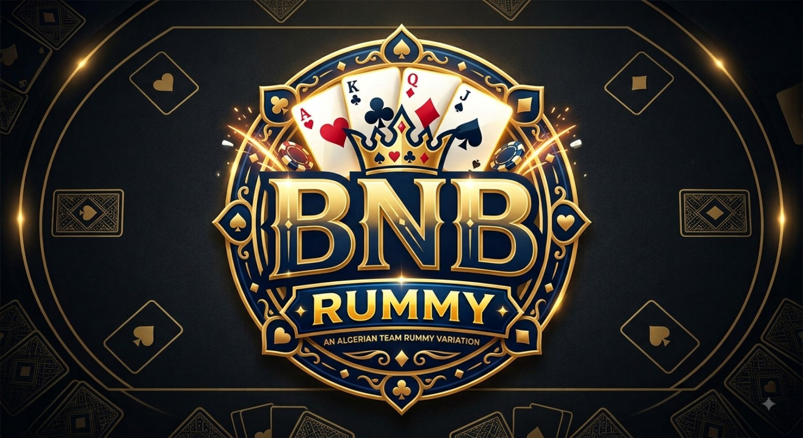

01
Build your team
Four players form two teams of two. Teammates sit opposite each other.

AN ALGERIAN TEAM RUMMY VARIATION
A strategic four-player Rummy variation where every combination, discard and joker can change the round.
THE GAME
BNB Rummy keeps the familiar foundations of Rummy while adding team interaction and tactical restrictions that make the shared table important.
Four players form two teams of two. Teammates sit opposite each other.
An opening must reach at least 71 points and contain a clean sequence of three or more cards.
Once opened, players can extend combinations across the shared table, including opponents' combinations.
When a player legally gets rid of their cards, the round ends and the opposing team is scored.
WHAT MAKES IT DIFFERENT
After opening, combinations are not isolated to one player. Players can extend combinations belonging to themselves, their teammate, or either opponent.
That creates a constant decision: improve your team's position, disrupt the opponent, or protect the cards you may need later.
RULES AT A GLANCE
Reach at least 71 points and include at least one clean sequence of 3+ cards.
The next unopened player must beat the previous unopened opening score.
Jokers are wild, with a maximum of one joker in any single combination.
A card usable as a table extension generally cannot be discarded unless both physical copies are held.
Only the most recent discard from the immediately preceding player may be taken, and it must be used immediately.
An unopened opponent counts as 100 points. If neither opponent opened, the winning team receives 200 points.
OFFICIAL DOCUMENT
The complete rules, examples, scoring system, joker rules, opening requirements and quick reference.
CREATOR
BNB Rummy was created and documented by Benyoub Mohamed Riadh in Tiaret, Algeria.
WELCOME TO BNB RUMMY